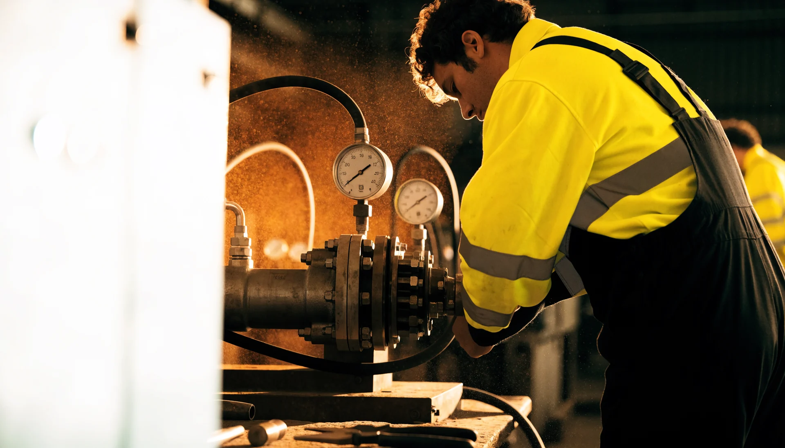
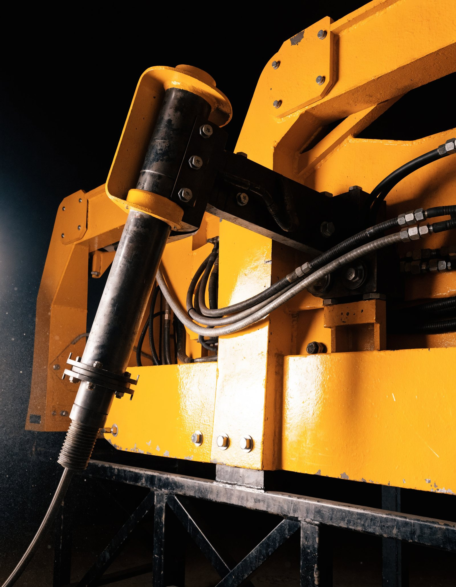
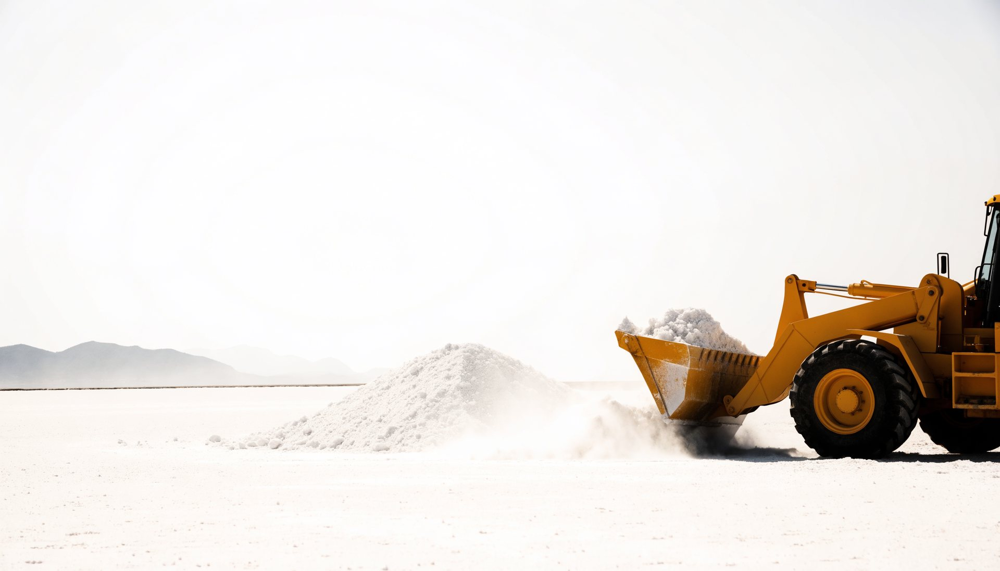
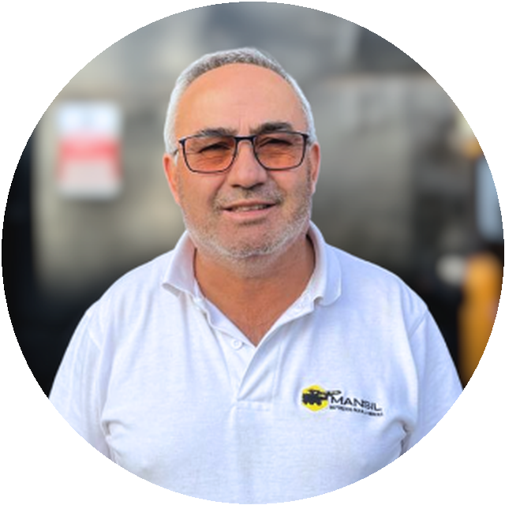
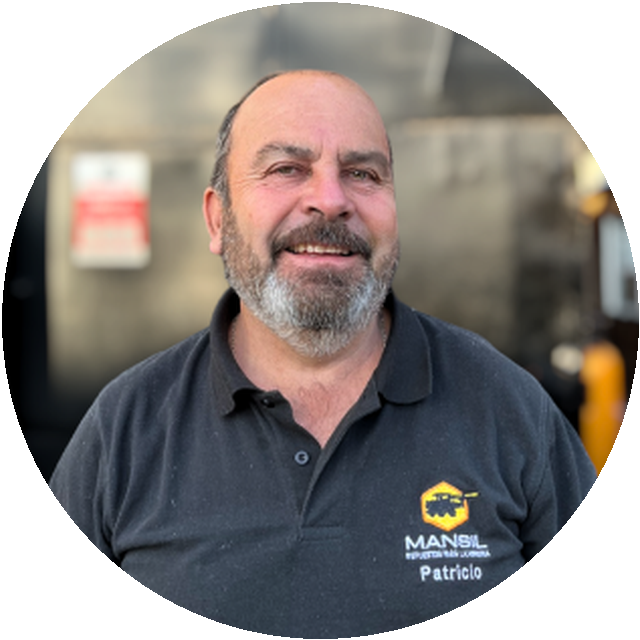
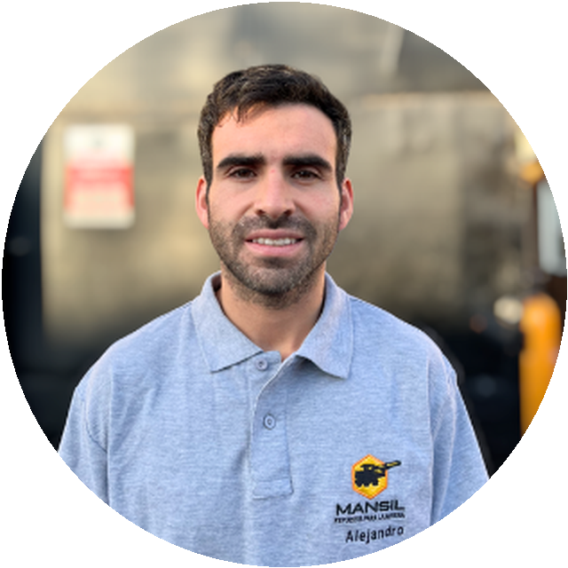

Reparación y mantención de componentes hidráulicos, con foco en perforadoras, bombas, brazos y unidades de rotación. Cada componente sale probado en nuestro banco de pruebas hidráulico.

Bombas, brazos completos, perforadoras COP y Tamrock, unidades de rotación. Todo sale probado en el banco.
Todas nuestras reparaciones pasan por rigurosos controles de calidad en un banco de pruebas hidráulico de alto rendimiento: resultados confiables, seguros y trazables para cada componente intervenido.

Un equipo de expertos evalúa las condiciones de tu maquinaria en la faena y, según su revisión, ejecuta:
Cada parte de tu equipo juega un papel en la eficiencia de la operación. Por eso ofrecemos soluciones de mecanizado a medida: trabajos de tornería y de fresado, y desmantelación e instalación de repuestos de maquinaria de minería.

Suministramos repuestos críticos —originales, OEM y alternativos de calidad— y elegimos con criterio técnico la solución correcta según urgencia, criticidad y presupuesto.
Del fabricante del equipo.
Del fabricante del componente: trazabilidad y origen.
Seleccionado por calidad, cuando la urgencia o el presupuesto lo piden.
Nos dedicamos a la reparación y venta de equipos mineros con más de 20 años de experiencia.

Claudio SilvaGerente generalMecánico hidráulico con más de 25 años en mantención y reparación de equipos mineros.
Patricio CerdaJefe de tallerTécnico electromecánico con más de 30 años de servicio a la industria minera.
Alejandro SilvaGerente comercial y finanzasIngeniero civil industrial, diplomado en centralidad del cliente y máster en management.